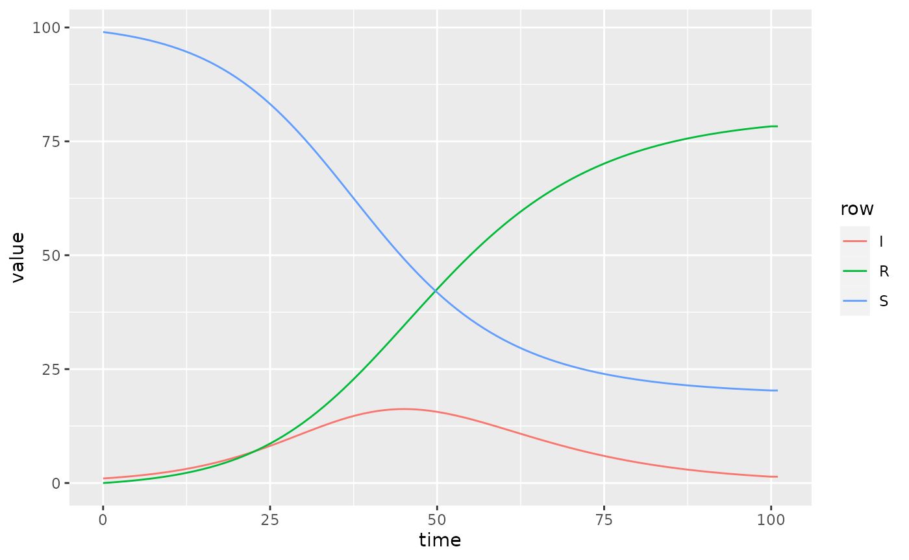

Quickstart Guide
quickstart.RmdModel Definition Files
Models are defined by a set of four model
definition files. Installations of macpan2 contain
several starter models for illustration. The simplest is an SIR model,
with a path that can be obtained as follows.
print(sir_dir <- system.file("starter_models", "sir", package = "macpan2"))
#> [1] "/home/runner/work/_temp/Library/macpan2/starter_models/sir"The first of these files is variables.csv, which
provides a list of the variables in the model.
#> Epi
#> S
#> I
#> R
#> N
#> beta
#> foi
#> gammaTODO: describe the meaning of each variable in this case.
In simple models like this, variables.csv is a
single-column CSV file. In this case the name of the column is
Epi, which isn’t particularly useful in this case. However,
in more complex structured models there could be many columns with names
like Epi, Age, and Location. In
this quickstart guide we focus on simple unstructured models.
The second file is flows.csv, which defines flows
between compartments.
#> from ,to ,flow ,type
#> S ,I ,foi ,per_capita
#> I ,R ,gamma ,per_capitaTODO: describe columns of flows.csv.
TODO: note that in structured models more columns are required.
The next file is settings.json, which has information
about how to interpret the variables and flows. In simple models like
this, the two relevant fields are a list of state variables (those that
can appear in the from and to columns of
flows.csv) and another list of flow variables (those that
can appear in the flow column of
flows.csv).
#> {
#> "required_partitions" : ["Epi"],
#> "null_partition" : "Null",
#> "state_variables" : ["S", "I", "R"],
#> "flow_variables" : ["foi", "gamma"]
#> }The final file, derivations.json, describes a list of
expressions for computing derived variables.
#> [
#> {
#> "simulation_phase" : "before",
#> "output_names" : ["N"],
#> "arguments" : ["S", "I", "R"],
#> "expression" : "sum(S, I, R)"
#> },
#> {
#> "simulation_phase" : "during_pre_update",
#> "output_names" : ["foi"],
#> "arguments" : ["I", "beta", "N"],
#> "expression" : "I * beta / N"
#> }
#> ]In this example, the derived variables are the total population size,
N, and the force of infection, foi.
TODO: describe the details of the fields in this file.
Getting Model Definitions into R
Once a directory that defines a compartmental model is produced, the
definition can be loaded into R using the Compartmental
function.
sir = Compartmental(sir_dir)This sir object contains several methods for working
with the model. The most important of these is the
simulators_tmb method, which is described in the next
section.
Numerical Inputs
The model definition does not contain any numerical quantities and so
it is not sufficient for running a simulation. The
$simulators$tmb method allows one to create a model engine,
which can be used to run simulations, by specifying numerical values for
key quantities. Here we specify an engine called
sir_simulator by providing the following information.
-
time_steps– How many time steps should the epidemic simulator run for? -
state– A named vector containing the values of the state variables defined insettings.json. -
flow– A named vector containing the values of the flow variables defined insettings.json. -
...– Any other named variables that are required of your model definition, because they are not derived quantities specified inderivations.json. In this example we havebetaandNthat are required.
Simulation
To generate simulations from the simulator, one uses the
report method. The results come out in narrow
format and always have the same columns.
sir_simulations = sir_simulator$report()
head(sir_simulations, 20)
#> matrix time row col value
#> 1 state 0 S 99.0000000
#> 2 state 0 I 1.0000000
#> 3 state 0 R 0.0000000
#> 4 state 1 S 98.8020000
#> 5 state 1 I 1.0980000
#> 6 state 1 R 0.1000000
#> 7 state 2 S 98.5850308
#> 8 state 2 I 1.2051692
#> 9 state 2 R 0.2098000
#> 10 state 3 S 98.3474075
#> 11 state 3 I 1.3222756
#> 12 state 3 R 0.3303169
#> 13 state 4 S 98.0873228
#> 14 state 4 I 1.4501327
#> 15 state 4 R 0.4625445
#> 16 state 5 S 97.8028435
#> 17 state 5 I 1.5895987
#> 18 state 5 R 0.6075577
#> 19 state 6 S 97.4919089
#> 20 state 6 I 1.7415734All variables in the simulations are matrix
valued – even ordinary numbers are stored as 1-by-1 matrices. The
first column in the output gives you the name of the matrix being
returned. Here we see the default behaviour of returning only the state
matrix (or vector). This can be modified with the
.mats_to_save and .mats_to_return arguments to
the $simulators_tmb method (TODO: clean up and point to
documentation).
The second column, time, gives the time step being
reported. The third and fouth columns give the row and column
identifiers within each matrices being reported on. The final column
gives each simulated value.
Processing Results
There are no plotting tools in macpan2. The philosophy
is to focus on the engine and modelling interface. We are not going to
do better than ggplot2 at plotting, for example, so we just
format the output so that it can be easily manipulated by someone who
has learned ggplot2. Here is an example.
(sir_simulations
%>% ggplot()
+ geom_line(aes(time, value, colour = row))
)